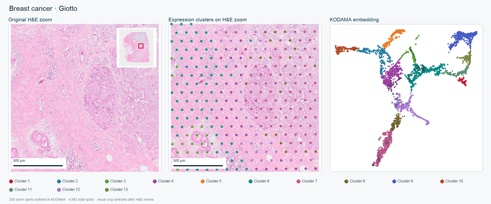
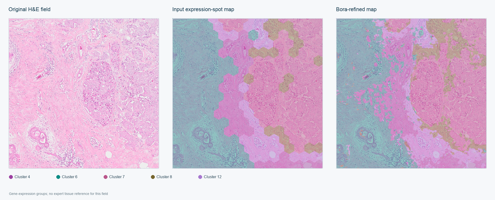
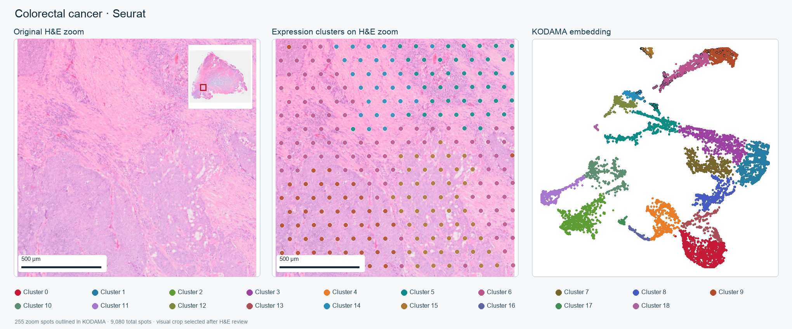
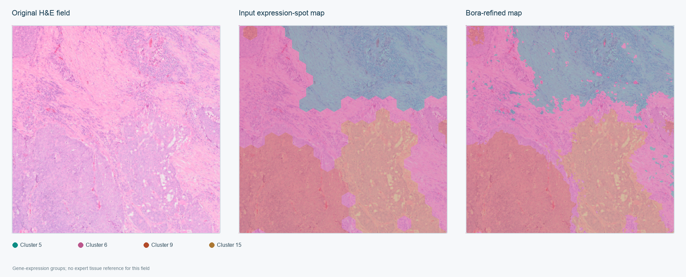
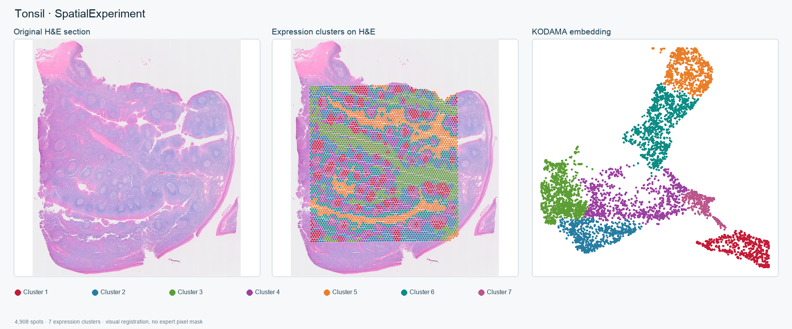
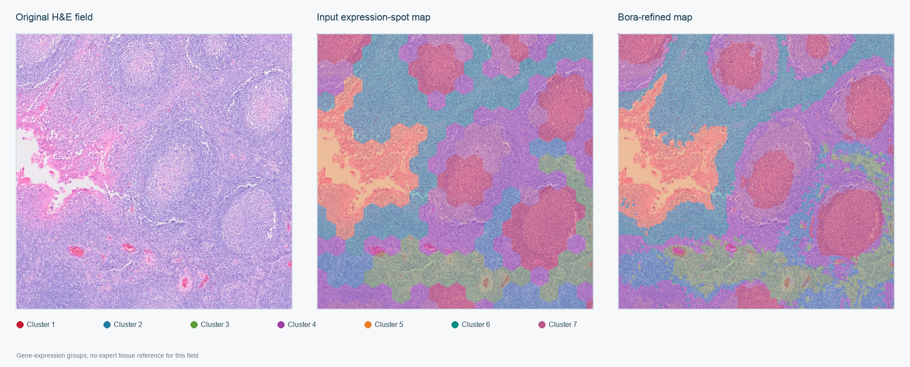

These are selected visual examples. The input groups come from gene-expression spots, and the Bora figures show selected H&E fields. No expert pixel-level tissue mask was provided for these three examples, so the panels do not establish segmentation accuracy. They are separate from the Visium HD whole-slide benchmark.
Breast cancer · Giotto
Expression-derived clusters are shown on the breast H&E section and in the KODAMA embedding. The lower figure compares the spot map with Bora’s refined map in one selected field.


Colorectal cancer · Seurat
The input groups were calculated from gene-expression spots. Bora used the matched H&E field to refine their boundaries.


Tonsil · SpatialExperiment
Expression-derived clusters cover the measured spot region. The Bora panel shows refinement on one matched H&E field.


Reproduce the Visium clustering workflows · Image provenance